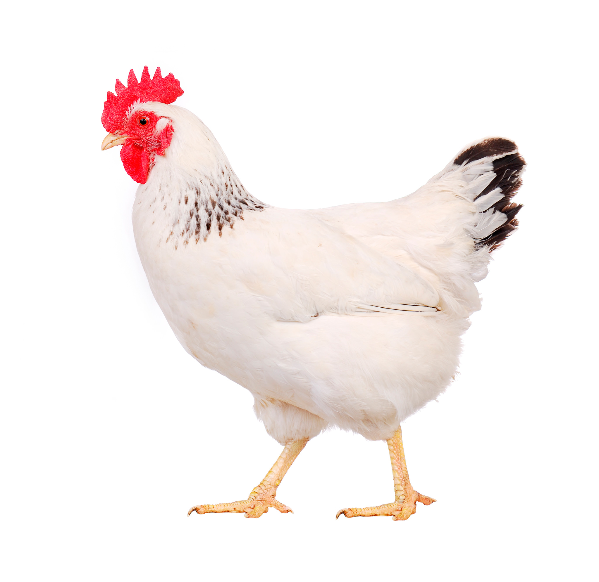

 A chicken (Gallus gallus domesticus) is a kind of domesticated bird. It is raised in many places for its meat and eggs.[1] They are usually kept by humans as livestock. Most breeds of chickens can fly for a short distance. Some sleep in trees (if there are trees around). A male chicken is called a rooster or a cockerel. A female chicken is called a hen; a young chicken is called a chick. Like other female birds, hens lay eggs. The eggs hatch into chicks. When raising chickens, a farmer needs a chicken coop (like a little house) for the chickens to roost (sleep) in. They also need a run or yard where they can exercise, take dust baths, eat and drink. The chickens also need to be protected from predators such as foxes. Fences are often used for this. [2]